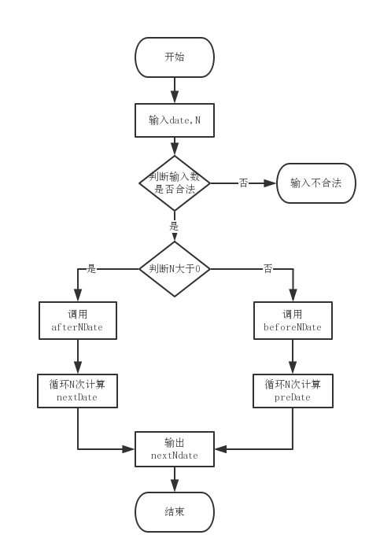

Abstract
本文介绍软件测试中经典问题nextdate的延伸–nextNDate, 以及记录使用nodejs引入mocha单元测试模块, 并且使用istanbul输出测试用例的覆盖率.其中测试用例又excel表格给出.
前置知识
- 软件测试理论
- js基础语法
步骤
nextNdate问题
nextdate问题是指,给出一个日期date, 可以得到第二天的日期. 而nextNDate是指给出一个date, 获得n天之后的日期.核心思路是将nextdate循环n次就可以得到nextNdate的日期.
但是,在1582年10月5-14,这十天是没有的;少了十天,特别的, 英国此时没少, 在1752.9.2- 14,少了11天[1]; 而且, 对于公元前的闰年的计算方法, 也有不同的方法.这里采用维基百科的计算方法.公元之前的闰年, 要用年份值减去1, 在去除以4.[2]此外, 在公历中是没有公元0年的概念, 公元1年的前一年是公元前1年.从数学上理解是没有整数0.[3]
另外, 在javascript中可以使用内置的date类型来实现加减天数, 只需要在date中加减24*60*60*1000就可以.[4]但是date类型数据没有对1582的时间进行处理.
实现的思路是, 根据N的正负, 分别调用afterNDate和beforeNDate. 对于afterNDate, 再去调用afterDate. 在afterDate里面, 将输入的date的与这个月的天数进行比较, 来判断是不是要把月份进位或者年份进位;这个月的天数无外乎31, 30, 28, 29这几种情况, 使用一个分支语句就可以简单的得到.对于beforeNDate同样的处理. 详细可以看代码.[5]和下面的流程图.

使用mocha进行单元测试
mocha使用的很简单, 读一下阮大大的博客[6],把里面的demo实现一下就可以.
使用istanbul显示测试用例的覆盖率.
同样, 也是阮大大的博客[7]
需要注意是在windos系统使用:
在window系统上因为路径的原因，不能使用 1
2
3
4
5此外, 由于在个例子中的有部分测试用例(比方说,N到了十万或者百万)耗时比较长,这可能是js的性能问题, 旁边java的同学马上就可以结果.orz.
如果一个用例时间太长, mocha就认为这个测试失败, mocha的默认时间是2000ms, 可以在通过添加调用参数来修改:
``` istanbul cover node_modules/mocha/bin/_mocha -- -t 100000 ./test/nextNDate.test.js
测试用例的设计
对于单元测试, 分为白盒测试和黑盒测试. 所谓黑盒测试, 就是把代码看做一个黑盒, 在外部进行输入, 比较输出是否和预期相同.这属于动态测试. 而对于白盒测试, 分为静态测试, 比如代码走查,和动态测试.
用例要有非法的输入, 比如日期选择在1582/10/10,这一天在代码中应该是不存在的一天; 而N 的输入可以是非数字的.还有一个情况, 输入的日期中, 有字符串格式, 比如”2010/“20/20”,类似于sql注入的情况.
如果N的值太大, 导致超出时间测试失败, 可以参考3.3的设计测试的时间.
使用js-xlsx读取存放在表格中的测试用例
excel表格存放测试用例确实不是一个好方法. 表格中的日期格式在微软的excel会自动处理成日期格式. 这样会导致js-xlsx读取出来的数据和看到的数据不一致, 这个问题在mac的表格也会出现. 解决办法可以在excel中使用text函数,把日期格式转换为文本格式, 注意转换的时候确定好’yyyy/mm/dd’格式还是’yyyy/m/d’格式, 前面的格式有0, 后面的没有0.比如前者显示2001/01/01, 后面显示2001/1/1.
js-xlsx的使用, 直接参照官方文档[8], 使用非常简单.其中sheet_to_json这个方法可以把表格数据导出为json格式, 非常适合js.
使用node-xlsx将测试结果输出到表格中.
使用输出重定向,把默认在控制台中打印信息写入到log文件中, 从log文件中使用正则匹配取得测试的覆盖率结果, 写入到excel表格中.
总结
这是上完测试课之后大作业. 用到的测试的原理比较简单, 无非是设计出尽量全面的用例.主要的精力用在如何用js实现代码.以及选择合适的代码库.
留下的教训:
- 团队合作, 一定要有相互之间交流的通用的标准.比方说前后台交互数据使用统一的json格式. 这里是excel表格单元格样式都设置为日期样式或者文本样式, 这样才不会改来改去.
后续学习
- 在写代码的过程中, 对js的全局变量和局部变量的使用不熟练, 应该继续看书.顺便可以把闭包研究一下.
- 关于测试的理论, 继续看教材学习
- 在3.4中”2010/“20/20”这种情况还没想到好办法.
- BDD和TDD两种开发方式如何选择. 至少需要有经验的人来了解一下.
- nodejs关于文件和流, 忘干净了.
参考文献和说明
- https://www.zhihu.com/question/54650391 ;
- https://zh.wikipedia.org/wiki/%E9%97%B0%E5%B9%B4
- https://zhidao.baidu.com/question/14299912.html
- http://yuanliyin.iteye.com/blog/653456
- https://github.com/gt2017/nextNDate
- http://www.ruanyifeng.com/blog/2015/12/a-mocha-tutorial-of-examples.html
- http://www.ruanyifeng.com/blog/2015/06/istanbul.html
- https://github.com/SheetJS/js-xlsx